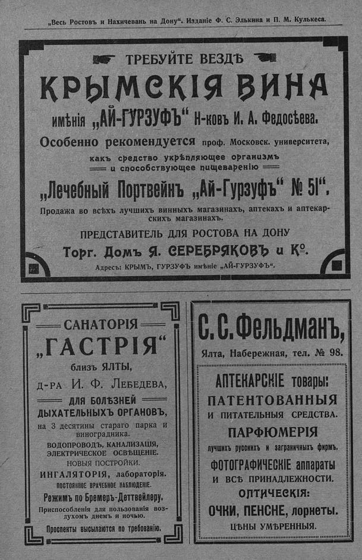

Лист источника 320
Скан

Распознанный текст
„Весь Ростовъ и Нахичевань на Дону“. Изданіе Ф. С. Элькина и П. М. Кулькеса.
☞ ТРЕБУЙТЕ ВЕЗДѢ ☜
КРЫМСКІЯ ВИНА
имѣнія „АЙ-ГУРЗУФЪ“ Н-ковъ И. А. Федосѣева.
Особенно рекомендуется проф. Московск. университета,
какъ средство укрѣпляющее организмъ
и способствующее пищеваренію
„Лечебный Портвейнъ „Ай-Гурзуфъ“ № 51“.
Продажа во всѣхъ лучшихъ винныхъ магазинахъ, аптекахъ и аптекар-
скихъ магазинахъ.
ПРЕДСТАВИТЕЛЬ ДЛЯ РОСТОВА НА ДОНУ
Торг. Домъ Я. СЕРЕБРЯКОВЪ и К°.
Адресъ: КРЫМЪ, ГУРЗУФЪ имѣніе „АЙ-ГУРЗУФЪ“.
САНАТОРІЯ
„ГАСТРІЯ“
близъ ЯЛТЫ,
Д-РА И. Ф. Лебедева,
ДЛЯ БОЛѢЗНЕЙ
ДЫХАТЕЛЬНЫХЪ ОРГАНОВЪ,
на 3 десятины стараго парка и
виноградника.
ВОДОПРОВОДЪ, КАНАЛИЗАЦІЯ,
ЭЛЕКТРИЧЕСКОЕ ОСВѢЩЕНІЕ.
НОВЫЯ ПОСТРОЙКИ.
ИНГАЛЯТОРІЯ, лабораторія.
ПОСТОЯННОЕ ВРАЧЕБНОЕ НАБЛЮДЕНІЕ.
Режимъ по Бремеръ-Деттвейлеру.
Приспособленія для пользованія воз-
духомъ днемъ и ночью.
Проспекты высылаются по требованію.
С. С. Фельдманъ,
Ялта, Набережная, тел. № 98.
АПТЕКАРСКІЕ товары:
ПАТЕНТОВАННЫЯ
И ПИТАТЕЛЬНЫЯ СРЕДСТВА.
ПАРФЮМЕРІЯ
лучшихъ русскихъ и заграничныхъ фирмъ.
ФОТОГРАФИЧЕСКІЕ аппараты
И ВСѢ ПРИНАДЛЕЖНОСТИ.
ОПТИЧЕСКІЯ:
ОЧКИ, ПЕНСНЕ, лорнеты.
ЦѢНЫ УМѢРЕННЫЯ.